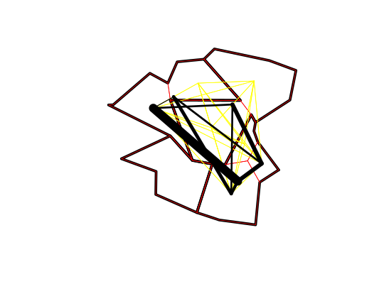

Aggregate OD data between polygon geometries
od_aggregate(flow, zones, aggzones, cols = FALSE, aggcols = FALSE, FUN = sum, prop_by_area = ifelse(identical(FUN, mean) == FALSE, TRUE, FALSE), digits = getOption("digits"))
| flow | A data frame representing the flow between two points
or zones. The first two columns of this data frame should correspond
to the first column of the data in the zones. Thus in |
|---|---|
| zones | A SpatialPolygonsDataFrame or SpatialPointsDataFrame representing the original centroids or boundaries of the travel flow data. Note that in the case of a SpatialPointsDataFrame, the entirety of the flow will be allocated to the polygon in which the point is located rather than being distributed by area. |
| aggzones | A SpatialPolygonsDataFrame containing the new boundaries to aggregate to. |
| cols | A character vector containing the names of columns on which to apply FUN. By default, all numeric columns are aggregated. |
| aggcols | A character vector containing the names of columns in aggzones to retain in the aggregated data.frame. By default, only the first column is retained. These columns are renamed with a prefix of "o_" and "d_". |
| FUN | Function to use on aggregation. Default is sum. |
| prop_by_area | Boolean value indicating if the values should be proportionally adjusted based on area. Default is TRUE unless FUN = mean. |
| digits | The number of digits to use when proportionally adjusting values based on area. Default is the value of getOption("digits"). |
data.frame containing the aggregated od flows.
Origin-destination ('OD') flow data is often provided in the form of 1 line per flow with zone codes of origin and destination centroids. This function aggregates OD flows between polygon geometries allocating the original flows to larger zones based on area.
data(flow) data(zones) zones@data$region <- 1 zones@data[c(2, 5), c('region')] <- 2 aggzones <- SpatialPolygonsDataFrame(rgeos::gUnaryUnion( zones, id = zones@data$region), data.frame(region=c(1, 2)) ) zones@data$region <- NULL od_aggregate(flow, zones, aggzones)#> o_region d_region All Work.mainly.at.or.from.home #> 1 1 1 1580.9990 0 #> 2 1 2 300.0000 0 #> 3 2 1 580.9998 0 #> 4 2 2 354.0000 0 #> Underground..metro..light.rail..tram Train Bus..minibus.or.coach Taxi #> 1 0.9999992 7.999994 179.99990 54.999963 #> 2 0.0000000 1.000001 44.99999 7.000000 #> 3 0.0000000 1.000000 72.99997 16.999994 #> 4 0.0000000 1.999999 42.00000 2.000001 #> Motorcycle..scooter.or.moped Driving.a.car.or.van Passenger.in.a.car.or.van #> 1 7.9999945 537.9996 71.99996 #> 2 0.0000001 115.0000 14.00000 #> 3 0.0000020 230.0000 28.99999 #> 4 0.0000000 121.0000 13.00000 #> Bicycle On.foot Other.method.of.travel.to.work #> 1 24.999982 682.9996 10.9999942 #> 2 9.999996 108.0000 0.0000006 #> 3 28.999992 200.9999 0.9999997 #> 4 3.000001 169.0000 1.9999995# another example with more zones and plots zones$quadrant = quadrant(zones, number_out = TRUE) aggzones <- SpatialPolygonsDataFrame( rgeos::gUnaryUnion( zones, id = zones@data$quadrant), data.frame(region = c(1:4)) ) od = od_aggregate(flow, zones, aggzones) od_sp = od2line(flow, zones) zones@data = cbind(1:nrow(zones), zones@data) od_sp_agg = od2line(od, zones, aggzones) # plot results plot(aggzones, lwd = 5)plot(zones, border = "red", add = TRUE)plot(od_sp, add = TRUE, col = "yellow")lwd = od_sp_agg$All / 50 plot(od_sp_agg, lwd = lwd, add = TRUE)